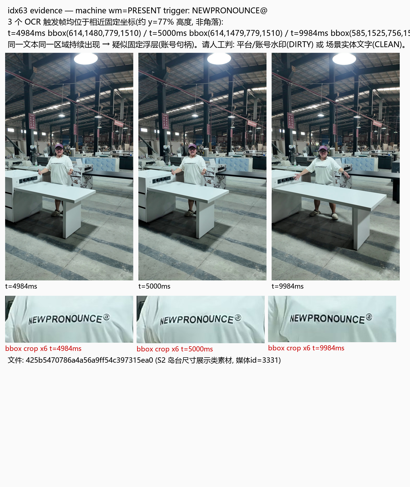

asset 425b5470786a4a56a9ff54c397315ea0 (S2, media 3331) · 3 个 OCR 触发帧坐标近似固定(约 y=77% 高度): t=4984ms bbox(614,1480,779,1510) · t=5000ms bbox(614,1479,779,1510) · t=9984ms bbox(585,1525,756,1556)
同一文本同一区域在 5s 与 10s 两处持续出现 → 疑似固定浮层(账号句柄)。请人工裁决: DIRTY(平台/账号水印) 或 CLEAN(场景实体文字)。
